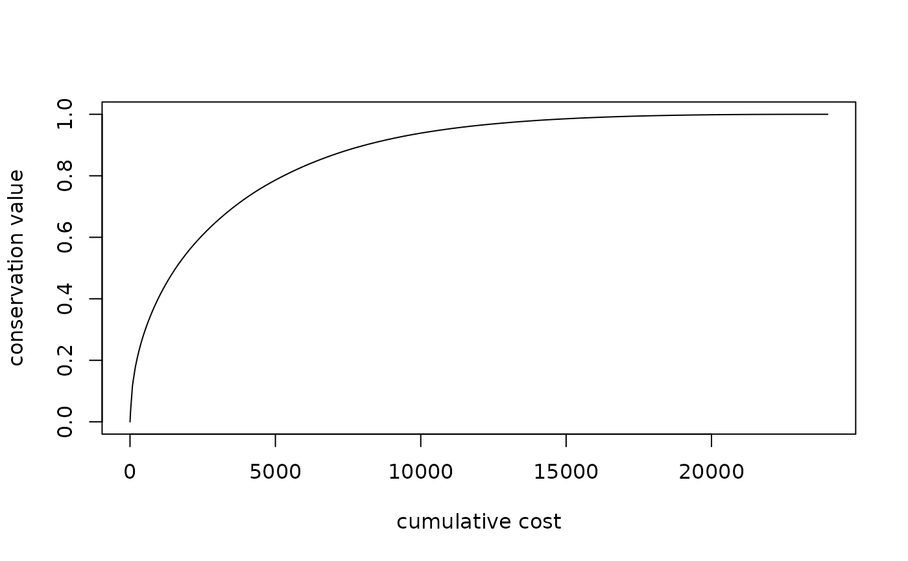
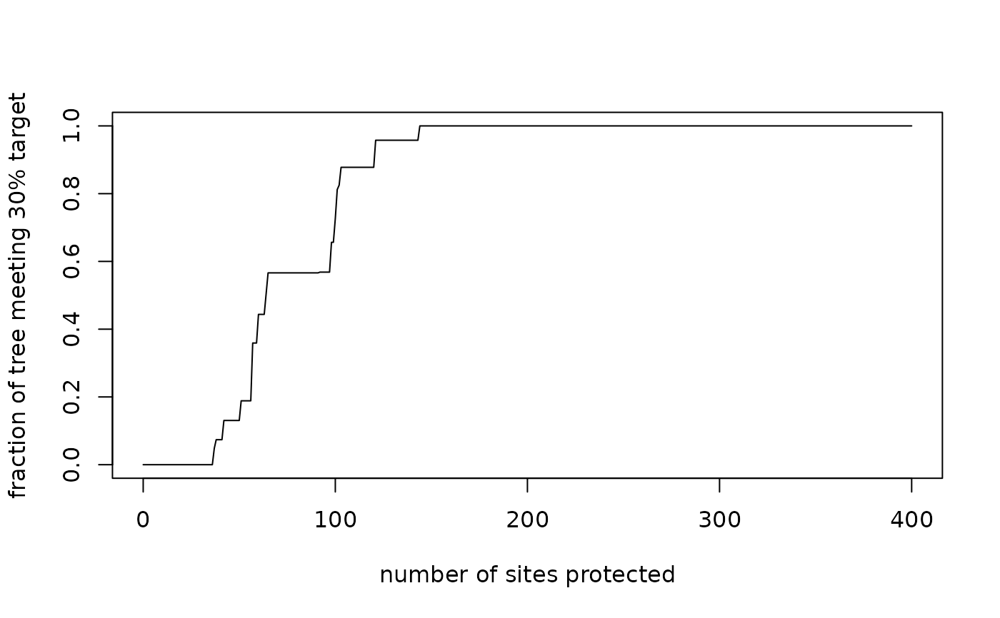
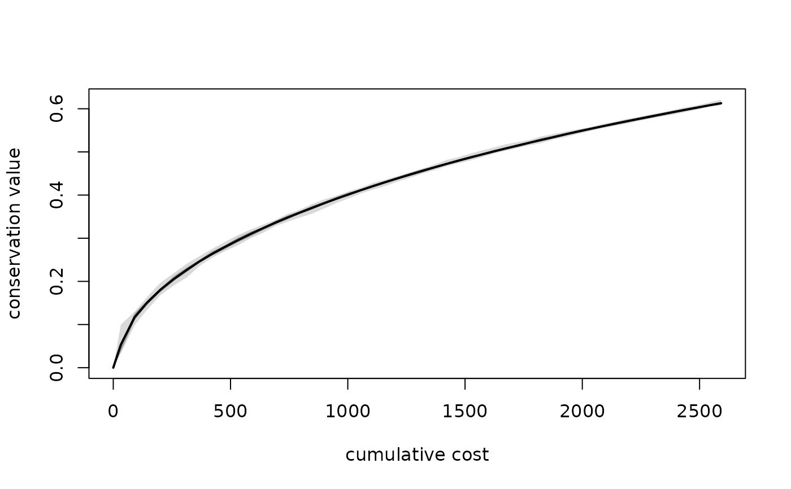

Compute performance curves describing how conservation value accumulates as sites are protected in the order given by
a ps_prioritize() ranking.
Arguments
- ps
The
phylospatialobject that was used to createpriority.- priority
The result of
ps_prioritize(). This must carry the"prioritization"attribute thatps_prioritize()attaches to its output; the attribute is lost if the result is written to file and read back in.- target
Numeric vector of one or more range protection targets, each between 0 and 1. For each target, the curve reports the fraction of the tree's total branch length belonging to lineages that have at least this fraction of their range protected. The default of
0.3applies a 30% protection target to each lineage's range.- x
A
ps_performanceobject.- xvar
Variable to plot on the x-axis:
"cost"(the default),"n_sites", or"gain".- yvar
Variable to plot on the y-axis:
"value"(the default) or one of thecovXtarget columns.- ...
Additional arguments passed to
graphics::plot().
Value
A data frame of class ps_performance. For method = "optimal" prioritizations, and for
method = "probable" prioritizations run with summarize = FALSE, it has one row per step per ranking, with columns:
- ranking
Index of the ranking (1 for an optimal prioritization; the rep number for probabilistic prioritizations).
- step
Step in the ranking, with 0 representing the starting state.
- site
Index of the site added at this step, in the full set of sites (including unoccupied sites).
- site_cost, site_gain, site_value
Cost of the site added at this step, the protection added (
protectionminus the site'sinitvalue), and the increase in network value.- n_sites, cost, gain, value
Cumulative number of sites added, cost, protection added, and network value.
- covX
For each
target, the fraction of total branch length belonging to lineages with at least X percent of their range protected.
For method = "probable" prioritizations run with summarize = TRUE, curves are summarized across reps at each step. The
per-site columns are omitted, a stat column identifies the summary statistic ("mean" and percentiles "pctX"),
and an n_reps column gives the number of reps that reached each step. Because these summaries are aligned by step,
a summarized cost value represents the typical cost of reaching a given step, not a fixed budget.
Details
Curves are reconstructed from the settings, inputs, and raw rankings stored with the prioritization result,
so init, cost, lambda, and protection are those used in the original call to ps_prioritize(). The curve
begins at step 0, which reflects any existing protection supplied via init. At each subsequent step, the next site
in the ranking is raised to the protection level. Curves stop at the last ranked site, so they are truncated if
max_iter was used.
Network value is the conservation objective optimized by ps_prioritize(): the sum across all lineages of
their benefit() (a function of the fraction of their range protected and the lambda parameter), weighted by their
share of total tree length. It ranges from 0 (nothing protected) to 1 (every lineage's full range protected).
The function returns an error if priority lacks the prioritization attribute or if ps does not match the data set used
for the prioritization, and gives a warning if the values in priority no longer match the stored rankings (e.g.
because the object was modified after prioritization).
Examples
# \donttest{
set.seed(123)
ps <- ps_simulate()
cost <- terra::setValues(ps$spatial, rep(seq(100, 20, length.out = 20), 20))
p <- ps_prioritize(ps, cost = cost, progress = FALSE)
perf <- ps_performance(ps, p, target = c(.1, .3))
head(perf)
#> ranking step site site_cost site_gain site_value n_sites cost gain
#> 1 1 0 NA NA NA NA 0 0.00000 0
#> 2 1 1 260 20.00000 1 0.03652507 1 20.00000 1
#> 3 1 2 130 62.10526 1 0.07891303 2 82.10526 2
#> 4 1 3 335 41.05263 1 0.02753456 3 123.15789 3
#> 5 1 4 129 66.31579 1 0.03813930 4 189.47368 4
#> 6 1 5 150 62.10526 1 0.02789538 5 251.57895 5
#> value cov10 cov30
#> 1 0.00000000 0 0
#> 2 0.03652507 0 0
#> 3 0.11543810 0 0
#> 4 0.14297266 0 0
#> 5 0.18111196 0 0
#> 6 0.20900734 0 0
plot(perf)

plot(perf, xvar = "n_sites", yvar = "cov30")

# probabilistic prioritization, with curves summarized across reps
pp <- ps_prioritize(ps, cost = cost, method = "prob",
n_reps = 25, max_iter = 50, progress = FALSE)
plot(ps_performance(ps, pp))

# }